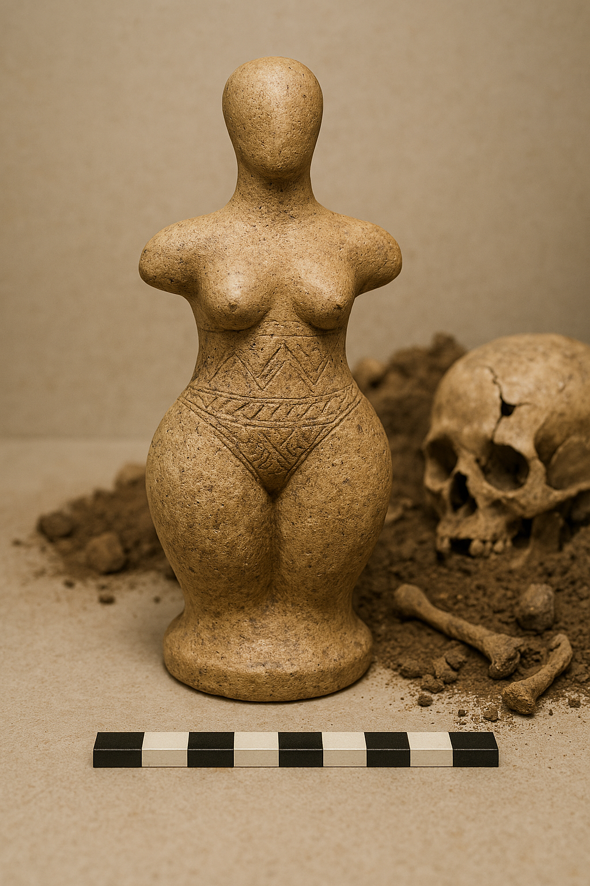
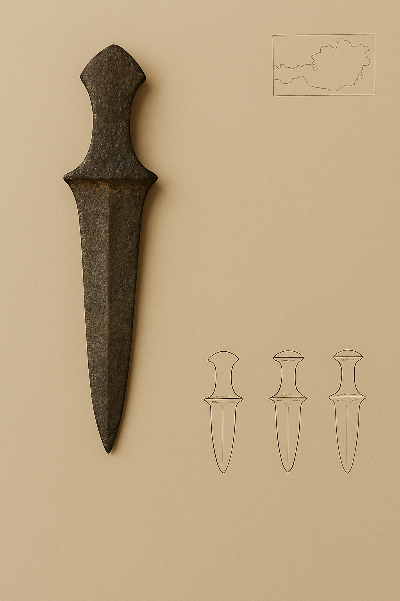
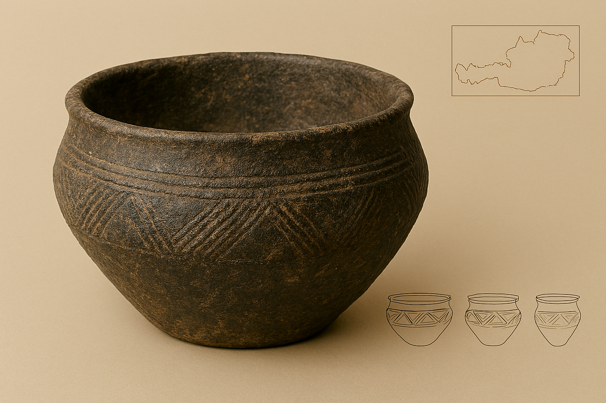
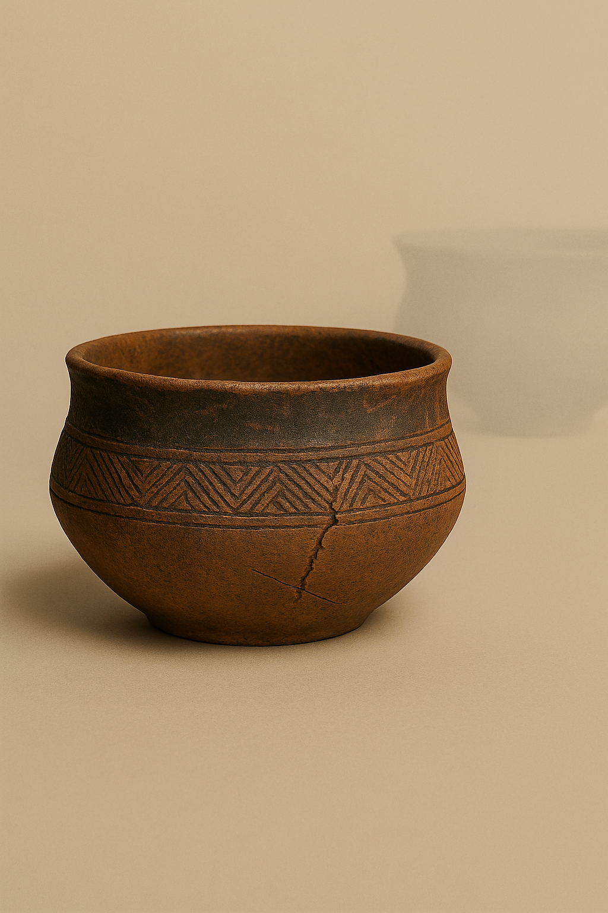
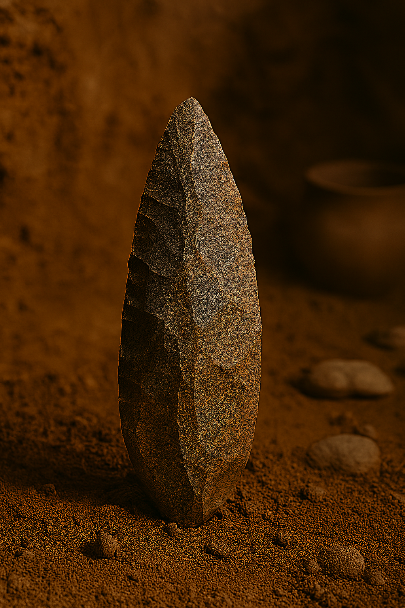
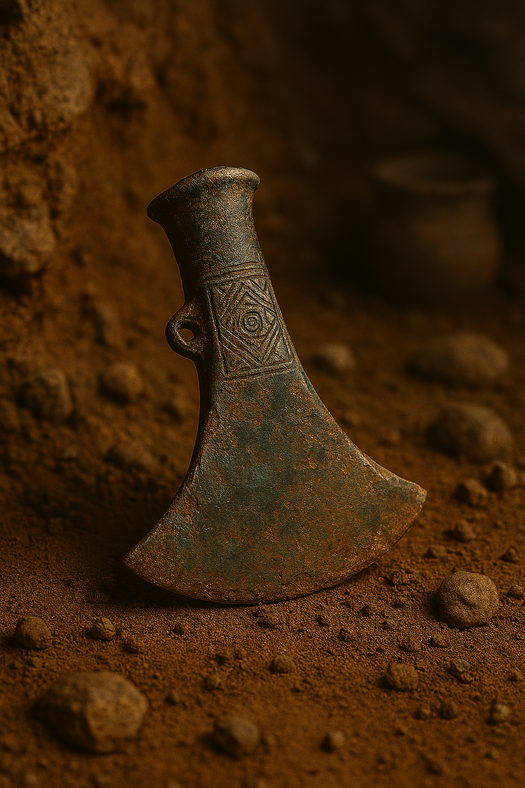

This is a ficticious website created purely for academic purposes. The content on this site was conceived by a human and created by Al. The Images were created by Al and curated, edited, reviewed, verified, validated, and augmented by a human.
Note: you can click on each image to see more information on each item.

Material: Carved limestone or clay composite
Size/Weight/Shape: ~15 cm tall; rounded hips, tapered legs, faceless head
Physical Properties: Smooth surface, incised torso patterns, stable base
Estimated Age: ~6,500 years BP; inferred from stratigraphy and typology
Preservation State: Complete; minor surface erosion
Location Found: Buried near skeletal remains, Tell Kurgan site, Austria (47.5162° N, 14.5501° E)
Likely Purpose: Ceremonial object symbolizing fertility or divine femininity
Evidence of Use: No wear marks; context suggests ritual placement
Manufacture Clues: Hand-carved; symmetrical form; incised geometric motifs
Found With: Human skull, bone fragments, charcoal traces
Burial or Habitat Context: Ritual burial pit within domestic layer
Symbolism: Fertility, motherhood, regeneration; abstract divine identity
Comparison: Similar to Venus figurines from Willendorf and Çatalhöyük

Material: Polished flint or chert
Size/Weight/Shape: ~20 cm long; leaf-shaped blade; flared guard
Physical Properties: Sharp edges; glossy surface; symmetrical profile
Estimated Age: ~5,000 years BP; typologically dated
Preservation State: Pristine; no visible damage
Location Found: Grave context, Hallstatt region, Austria
Likely Purpose: Ceremonial weapon or status symbol
Evidence of Use: No wear; possibly unused in combat
Manufacture Clues: Pressure flaking; polished finish; ergonomic grip
Found With: Bronze beads, ceramic shards, ochre traces
Burial or Habitat Context: Elite tomb with grave goods
Symbolism: Prestige, protection, warrior identity
Comparison: Comparable to Alpine daggers from the Pfyn culture

Material: Fired clay with mineral temper
Size/Weight/Shape: ~25 cm tall; rounded body; wide mouth
Physical Properties: Matte surface; incised chevron patterns
Estimated Age: ~4,000 years BP; inferred from ceramic typology
Preservation State: Partial; minor rim damage
Location Found: Midden layer, Danube Valley site
Likely Purpose: Storage of grains or liquids
Evidence of Use: Soot residue on base; interior abrasion
Manufacture Clues: Wheel-thrown; incised before firing
Found With: Animal bones, grinding stones
Burial or Habitat Context: Domestic refuse layer
Symbolism: Chevron motifs may indicate clan or seasonal cycles
Comparison: Similar to Vučedol and Baden culture ceramics
Cultural Phase: Associated with the “Riverborn Cycle,” a transitional phase in the Danubian Neolithic marked by seasonal migration and clan-based resource sharing.

Material: Burnished clay with mineral inclusions
Size/Weight/Shape: ~18 cm diameter; bowl-like form
Physical Properties: Smooth finish; etched triangles and lines
Estimated Age: ~3,800 years BP; stratigraphic dating
Preservation State: Nearly complete; minor base chipping
Location Found: Excavation trench B, Salzburg basin
Likely Purpose: Serving or ritual offering vessel
Evidence of Use: Faint residue; interior discoloration
Manufacture Clues: Hand-built; incised post-drying
Found With: Charcoal, shell beads, ash layer
Burial or Habitat Context: Hearth zone in domestic dwelling
Symbolism: Geometric patterns may reflect cosmological beliefs
Comparison: Echoes motifs from Bell Beaker ceramics
Cultural Phase: Associated with the “Riverborn Cycle,” a transitional phase in the Danubian Neolithic marked by seasonal migration and clan-based resource sharing.
Excavator Notes: “The vessel emerged from the soil like a memory—its patterns still sharp, its body still strong. It felt less like a discarded object and more like a whisper from the hearth.” — Dr. Mirela Kovács, 2011
Interpretive Tension: Though found in a refuse layer, the vessel’s intricate design and careful construction suggest symbolic or ritual importance, challenging assumptions about its mundane use.
Legends or Local Lore: Regional tales speak of “The Vessel of Echoes,” said to hum softly when filled with river water during solstice. Some believe it carries ancestral voices tied to the chevron markings.
Access Warnings: Local elders caution against displaying the vessel upside down, citing stories of misfortune and disrupted seasonal cycles in nearby villages.

Material: Basalt or flint
Size/Weight/Shape: ~12 cm long; teardrop shape
Physical Properties: Rough surface; flaked edges; dense core
Estimated Age: ~250,000 years BP; contextually dated
Preservation State: Complete; edge wear visible
Location Found: Cave layer, Moravian Karst
Likely Purpose: Cutting, scraping, general tool use
Evidence of Use: Edge dulling; micro-polish on grip
Manufacture Clues: Bifacial flaking; no hafting
Found With: Faunal remains, charcoal, bone tools
Burial or Habitat Context: Occupation layer in cave shelter
Symbolism: Likely utilitarian; no symbolic markings
Comparison: Matches Acheulean hand axes from Europe
Cultural Phase: Believed to belong to the “Silent Epoch,” a Paleolithic phase marked by nomadic cave-dwelling communities and early tool standardization across Europe.

Material: Cast bronze alloy with copper and tin
Size/Weight/Shape: ~16 cm long; crescent blade; tubular socket
Physical Properties: Dense metal; green-blue patina; smooth blade edge
Estimated Age: ~3,200 years BP; carbon-dated organic hafting residue
Preservation State: Complete; minor corrosion and pitting
Location Found: Burial mound near Krems, Austria; coordinates 48.411° N, 15.606° E
Likely Purpose: Ceremonial weapon or elite tool
Evidence of Use: Polished blade edge; hafting wear near socket
Manufacture Clues: Mold seams; decorative engraving; socketed design
Found With: Bronze pins, amber beads, textile fragments
Burial or Habitat Context: Elite grave within fortified settlement
Symbolism: Status, power, and martial identity; possibly ritualized warfare
Comparison: Similar to Urnfield culture axe heads and Nordic ceremonial blades
Cultural Phase: Linked to the “Sunforge Ascendancy,” a late Bronze Age phase characterized by fortified hilltop settlements, elite warrior classes, and symbolic metallurgy rituals.